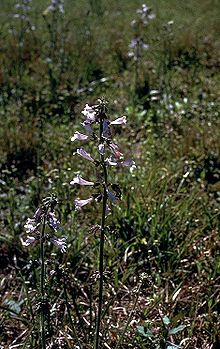

Terna
Dari Wikipedia bahasa Indonesia, ensiklopedia bebas
Terna adalah tumbuhan yang batangnya lunak karena tidak membentuk kayu. Tumbuhan semacam ini dapat merupakan tumbuhan semusim, tumbuhan dwimusim, ataupun tumbuhan tahunan. Yang dapat disebut terna umumnya adalah semua tumbuhan berpembuluh (tracheophyta). Biasanya sebutan ini hanya dikenakan bagi tumbuhan yang berukuran kecil (kurang dari dua meter) dan tidak dikenakan pada tumbuhan nonkayu yang merambat (digolongkan tumbuhan merambat).
Di daerah tropika banyak dijumpai terna yang tahunan, sementara di daerah beriklim sedang, terna biasanya sangat bersifat musiman: bagian aerial (yang tumbuh di atas permukaan tanah) luruh dan mati pada musim yang kurang sesuai (biasanya musim dingin) dan tumbuh kembali pada musim yang sesuai.
Kadang-kadang terna juga menghasilkan jaringan berkayu (terlignifikasi) pada bagian pangkal batang utama.
Istilah "herba" dalam botani merujuk ke terna, namun dalam bidang pengobatan "herba" berarti bagian tumbuhan segar atau berkadar air tinggi yang dipakai sebagai bahan penyegar (tonikum), pengobatan, atau bahan penyulingan untuk diambil minyak atsirinya.
https://id.wikipedia.org/wiki/Terna